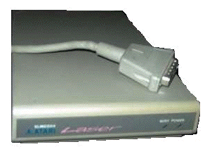

|
|
15.9 Laser & Hard Drive DIP Switch
Laser & Hard Drive DIP Switch
Hier finden Sie die korrekte und vollständige Einstellungen
der DIP-Switches der Festplatten und der Atari Laserdrucker. Wie sie
sicher selber wissen sind diese DMA Dip-Schalter in keiner einzigen
originalen Atari Dokumentation richtig und vollständig
aufgeführt.
Here you see the complete an correct setting for all the DMA dip
switches of all Atari Hard Drives and Laser Printers. I'm sure you
know that all these DMA Dip switches can't be found well in any
orignal Atari document.
Alle diese DMA Dip Switches finden sich in orignalen Atari
Festplatten und den SLMC Laserdruckern bzw. dessen Conrollern
innerhalb der Geräte!. Sie können die Einstellungen nur
sehen und ändern wenn sie die Geräte öffnen!
All Dip Switches are on regular Atari DMA Hard Drives and SLMC
Laser Printer Units! You have to disassemble any Unit if you want to
see or change the setting of the Unit!
Warning/Warnung
Stellen Sie sicher das ALLE DMA-Geräte UND der Computer
ausgeschaltet sind wenn sie eine Änderung an diesen DIP-Schaltern
vornehmen! Stellen Sie sicher das jedes einzelne Gerät eine
eigene DIP-Schalter einstellung hat. Beachten Sie bitte das die
meisten Geräte Werksseitig die mit dem "*" markierte
Einstellung 7 besitzen! Das ist generell wichtig wenn Sie mehr wie ein
DMA-Gerät an ihrem Computer anschliessen möchten!
Beachten Sie dazu auch zwingend die Einstellungen der dazu
nötigen Softwaretreiber!!
Sie zerstören auf einer Orignal Atari Festplatte alle
Informationen wenn der Computer nicht definitiv genau zwischen einem
vorhandenen Laserdrucker und einer gleichzeitig angeschlossenen
Festplatte unterscheiden kann!
Do not change any DIP if not all Units and the Computer is
switched OFF!
You wipe out all informations on Atari Hard Drives if it thinks
software wise it is an Atari SLMC 804 Laser Controller!
 Abbildung 1 - Atari Laserdrucker Interface
Tip
Wenn Sie sich einige Arbeit, bei mehreren DMA-Geräten, sparen
möchten notieren Sie deren DMA DIP Einstellung auf einem
Aufkleber und bringen Sie diesen auf der Rückseite der
entstprechenden Geräte an.
If you like to save time, wrot down any DMA Setting of any Unit to
an adhesive label and apply label backside of any Unit.
|
|
|